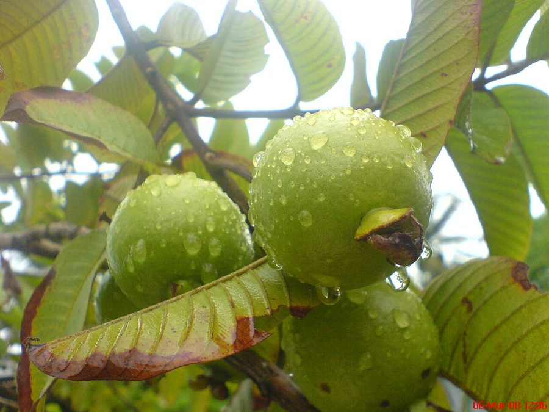

अमरूदGuava
Psidium guajava · Myrtaceae · FLR-0100

- Scientific name
- Psidium guajava L.
- Family
- Myrtaceae
- Hindi
- अमरूद
- Status here
- naturalized
- IUCN
- not evaluated
When to look कब देखें
Present all year.
अमरूद / Guava
Psidium guajava L. — Myrtaceae
अमरूद (अमूरद / बिही / कॉमन अमरूद) — पूर्वी उत्तर प्रदेश के ग्रामीण घरों के आहातों, व्यावसायिक बगीचों (amrud bagh) और जंगलों की सीमाओं में बहुतायत से पाया जाने वाला एक छोटा से मध्यम आकार का, बहुवर्षीय फलदार पेड़ (small to medium fruit tree) है। यह मूल रूप से मध्य अमेरिका का निवासी है, जिसे लगभग 400 वर्ष पूर्व पुर्तगालियों द्वारा भारत में लाया गया था। यह अब यहाँ पूरी तरह से प्राकृतिक (naturalized) हो चुका है क्योंकि यह बिना मानवीय सहायता के भी जंगलों और बंजर भूमि में आसानी से उग जाता है। इसकी सबसे बड़ी पहचान इसकी चिकनी, हल्के भूरे रंग की छाल है जो पतले छिलकों के रूप में उतरती है (peeling copper bark), इसके सम्मुख रूप से व्यवस्थित उभरी हुई नसों वाले पत्ते, सफेद ब्रश जैसे सुगंधित फूल, और गोल या नाशपाती के आकार के फल हैं जो पकने पर पीले हो जाते हैं और जिनके अंदर सफेद या गुलाबी रंग का रसीला गूदा (pink or white flesh) भरा होता है। अमरूद में संतरे की तुलना में 5 गुना अधिक विटामिन सी (high Vitamin C) पाया जाता है। इसके पत्तों का उपयोग पेट दर्द और दस्त के पारंपरिक घरेलू उपचारों में किया जाता है, और फल मक्खी (Oriental Fruit Fly (Bactrocera, not yet in the atlas)) इसका मुख्य हानिकारक कीट है।
Quick Identification त्वरित पहचान
| Feature | Description |
|---|---|
| Tree habit | Small, spreading, evergreen or semi-deciduous tree growing 3–8 meters high, with a low-branching crown |
| Bark | Extremely smooth, light greenish-brown or copper, peeling off in thin, papery flakes, revealing a smooth pinkish inner bark |
| Leaves | Oppositely arranged, simple, elliptic (5–15 cm long), with prominent, sunken veins on the upper surface |
| Flowers | White (2.5–3.0 cm wide), solitary or in clusters of 2–3 in leaf joints, bearing a large central brush of white stamens |
| Fruit | A globose or pear-shaped berry (5–10 cm); green turning yellow when ripe, containing white or pink sweet flesh |
Field tip: Look in home backyards. Search for small trees with very smooth, copper-green bark that peels in thin wooden scales. Rub the leaves; they are stiff with deep ribs underneath. The round yellow fruits are fragrant and have a woody cup-like calyx at the bottom tip.
Morphology आकारिकी
Biometrics (typical measurements of mature trees in the northern Indian plains):
| Measurement | Range |
|---|---|
| Tree height | 3.0–8.0 m |
| Trunk diameter (DBH) | 10–20 cm |
| Leaf length | 5.0–15.0 cm |
| Flower diameter | 2.5–3.0 cm |
| Fruit diameter | 5.0–10.0 cm |
| Fruit weight | 100–300 g |
| Seed size | 2–3 mm |
Trunk and Bark: The trunk is hard and twisting. The peeling bark prevents parasitic vines and lichens from clinging to the tree trunk.
Foliage: Elliptic leaves, blunt-pointed at the tip, smooth above, covered in fine velvety hairs beneath.
Flowers: Fragrant, bisexual, with 4–5 white petals and hundreds of long white stamens with pale yellow pollen tips.
Fruit and Seeds: The fruit contains a central cavity filled with fleshy pulp and numerous small, hard, yellowish seeds that are easily dispersed by birds.
Cultivation Calendar कृषि कैलेंडर
- Propagation: Cultivated varieties (like Allahabad Safeda or Lalit Pink) are propagated using air layering (gootee) or wedge grafting during monsoon rains in July–August.
- Bahár (Flowering) Treatment:
- Winter Crop (Mrig Bahár): Flowers emerge in April–May; fruits mature from November to January. This crop yields the sweetest, insect-free fruits.
- Rainy Crop (Ambe Bahár): Flowers emerge in January–February; fruits mature in July–August, which are often watery and heavily damaged by fruit flies.
- Pruning: Done in March to encourage new fruiting shoots.
Associated Species / Interactions संबंधित प्रजातियाँ
- Avian Seed Dispersers: Rippling fruits are eaten by the Red-vented Bulbul (BRD-0006) and parakeets, which pass the hard seeds in their droppings, causing the tree to naturalize in wild scrublands.
- Host Plant: The flowers provide nectar to giant honeybees (Apis dorsata) and stingless bees.
Pests and Diseases कीट और रोग
- Guava Fruit Fly: Bactrocera dorsalis (Oriental Fruit Fly (Bactrocera, not yet in the atlas)) punctures ripening fruits to lay eggs. The larvae tunnel through the pulp, causing fruits to rot and drop during the rainy season.
- Guava Wilt: A lethal fungal disease (Fusarium oxysporum) causing leaves to yellow, dry, and branches to wilt within weeks in alkaline soils.
- Mealybugs: Soft-bodied bugs cluster under leaves and on fruit stalks, secreting honeydew.
Traditional and Ethnobotanical Use पारंपरिक और नृवंशवनस्पति उपयोग
- Diarrhea Remedy (Leaf Decoction): 4–5 fresh tender leaves are boiled in a cup of water with a pinch of salt to make an astringent tea, consumed twice daily to stop diarrhea and dysentery.
- Sore Throat Mouthwash: Warm decoction of leaves is gargled to reduce throat pain and treat bleeding gums or mouth ulcers.
- Black Pepper Salted Fruit: Fresh winter guavas are sliced, sprinkled with a mixture of black salt and black pepper (kala namak and kali mirch), and eaten under the winter sun.
- Acidity relief (Fruit pulp): Ripe fruits are eaten with seeds to relieve chronic constipation and regulate bowel movements.
Expected Locally स्थानीय रूप से अपेक्षित
Not a field record. Written from published accounts for eastern Uttar Pradesh. No confirmed local sighting yet — if you have seen it, that is what the atlas needs.
अभी तक स्थानीय पुष्टि नहीं। यह विवरण प्रकाशित स्रोतों से है, किसी अवलोकन से नहीं।
A highly common fruit tree found in almost every home garden (bari) and large orchard across the Basti district, regularly observed in the Harraiya, Vikramjot, and Basti blocks. Villagers state that winter guavas (mrig bahar) are much superior in taste to monsoon guavas because winter morning frosts prevent fruit fly worms from attacking the fruits.
Distribution वितरण
Global range: Native to tropical Central America and Southern Mexico; introduced globally by early Spanish and Portuguese explorers and now naturalized across all tropical zones.
In India: Cultivated throughout all states; the city of Prayagraj (Allahabad) in UP is famous for producing the high-quality "Allahabad Safeda" guava.
In Uttar Pradesh: Abundant state-wide, both in commercial orchards and home gardens.
In Basti district / eastern UP: Widespread across all residential blocks.
Research Questions शोध प्रश्न
Anyone can investigate these | कोई भी इन प्रश्नों की जाँच कर सकता है
- Does bagging young green Guava fruits in newspaper bags prevent Fruit Fly damage compared to unbagged fruits? — Test low-cost fruit protection.
- How many days does a Guava leaf decoction take to control mild diarrhea compared to commercial oral rehydration solutions? — Track healing times under supervision.
- What is the seed germination rate of Guava when collected from fresh bird droppings compared to hand-extracted seeds? — Run seed trials.
- How does the winter temperature of January affect the sweetness (sugar content) of Guava fruits in Basti? — Measure fruit sugar levels.
- Does the population count of mealybugs on Guava trees decrease when the trunk is wrapped in a smooth plastic band in Basti? / क्या बस्ती में पेड़ के तने पर चिकना प्लास्टिक बैंड लपेटने से अमरूद के पेड़ पर मिलीबग (Mealybug) की संख्या कम हो जाती है? — Compare insect counts on banded and control trees.
Similar Species मिलती-जुलती प्रजातियाँ
| Species | How to tell apart | comparison |
|---|---|---|
| Jamun (Syzygium cumini) | Bark is rough, grey; leaves are smooth, dark green, aromatic; fruit is a small purple-black single-seeded drupe | जामुन — खुरदरी छाल, बैंगनी-काले छोटे फल |
| Bel (Aegle marmelos) | Has sharp spines; compound 3-foliate leaves; fruit is massive with a hard woody shell | बेल — कांटेदार तना, कठोर लकड़ी जैसा खोल |
| Custard Apple (Annona squamosa) | Leaves are thinner, alternate; fruit is covered in rounded green tubercular scales, containing black seeds | शरीफा — उभरी हुई हरी शल्कों वाला फल |
Field rule: Small low-branching tree with smooth copper peeling bark, leaves with deep ribs underneath, white brush-like flowers, and round yellow edible fruits containing numerous hard seeds, is the Guava (Amrud).
Taxonomy & Classification वर्गीकरण
Original description. Carl Linnaeus described the Guava as Psidium guajava in 1753 in his Species Plantarum (Vol. 1, p. 470). The type locality was listed as India (which was an error, as the species is native to tropical America). The genus name Psidium is derived from the Greek psidion, meaning pomegranate. The specific name guajava comes from the Spanish guayaba, which is of Taino (Arawak) origin.
Subspecies. Monotypic — no subspecies are currently recognised in the main index.
Family and order placement. Placed in the order Myrtales, family Myrtaceae (myrtle family), subfamily Myrtoideae, tribe Myrteae.
Phylogenetic notes. Psidium guajava is the type species of the genus Psidium, exhibiting typical myrtaceous traits of multi-stamened flowers, essential oil glands (myrcene, caryophyllene) in leaves, and fleshy berries adapted for seed dispersal by frugivorous bats and birds.
IUCN status rationale. Not evaluated (NE) by the IUCN Red List. It has a massive, secure, and naturalized global population.
Photo Gallery फोटो गैलरी
References संदर्भ
- Linnaeus, C. (1753). Species Plantarum. Laurentii Salvii, Holmiae, Vol. 1, p. 470. [original description]
- Brandis, D. (1906). Indian Trees. Archibald Constable & Co., London.
- Kirtikar, K. R. & Basu, B. D. (1935). Indian Medicinal Plants. Vol. II. Lalit Mohan Basu, Allahabad.
- Morton, J. F. (1987). Guava. In: Fruits of Warm Climates. Miami, FL (covers crop history and uses).
- World Flora Online (2024). Psidium guajava taxon details.
- GBIF Occurrence Data — Psidium guajava, India (2010–2025).
Source file: species/flora/crops/guava.md